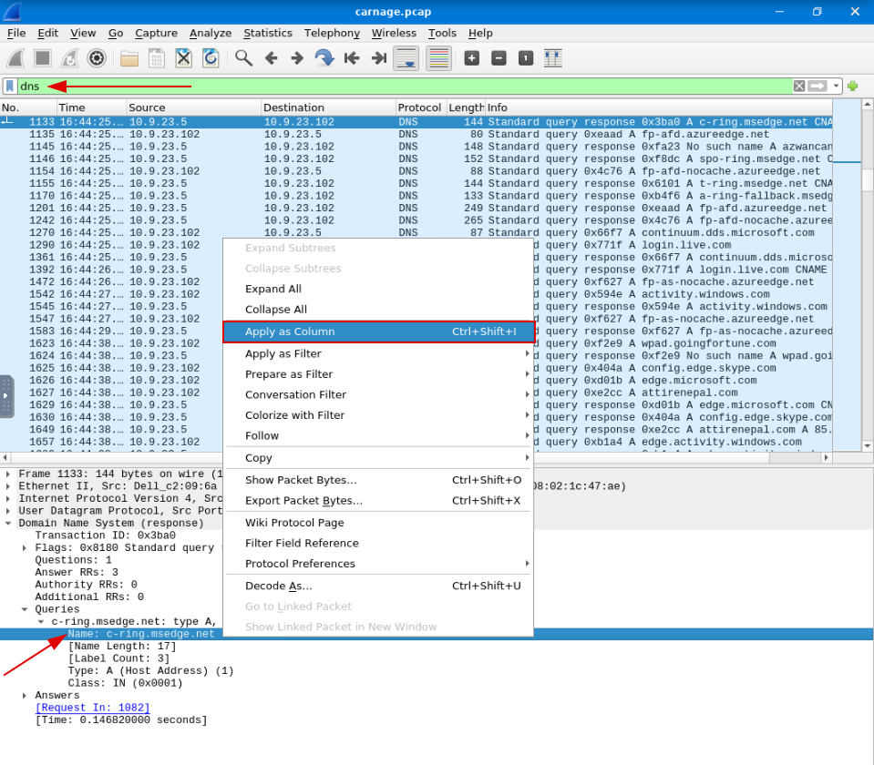
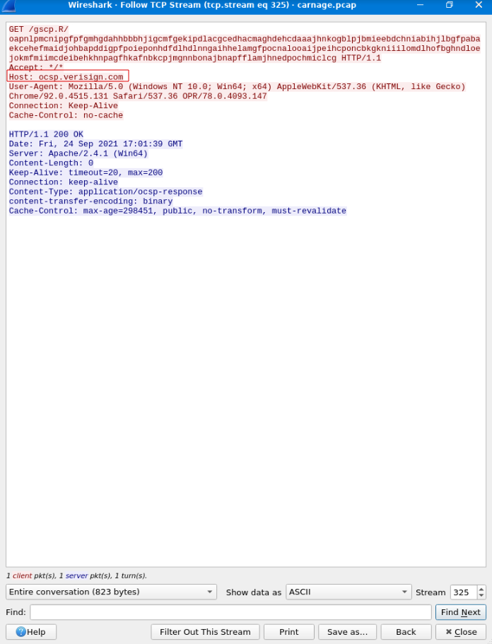
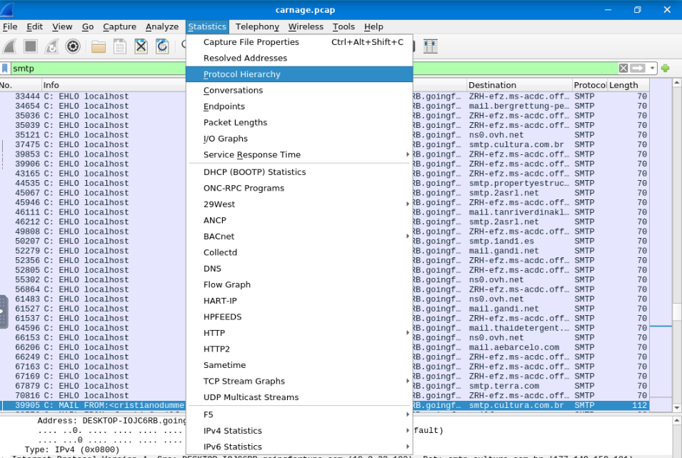

Scenario Notes:
• Eric Fischer from Bartell Ltd's Purchasing Department opened a Word document received via email and clicked on "Enable Content."• As a result of clicking on "Enable Content," Eric's workstation initiated suspicious outbound connections, triggering an alert from the SOC (Security Operations Center) department.
• The SOC department retrieved a packet capture (pcap) from the network sensor to analyze the nature and scope of the suspicious connections.
• The pcap analysis will focus on identifying the source, destination, and purpose of the outbound connections, as well as potential indicators of compromise and any malicious activities associated with the incident.
Objective:
Investigate the packet capture and uncover the malicious activities.Question 1:
What was the date and time for the first HTTP connection to the malicious IP? (answer format: yyyy-mm-dd hh:mm:ss)Explanation:
First we will query wireshark for every http connection, and then we can investigate when was the first target by two ways, either by organizing the packets in cornological order or assume that the first connecction made is a connection that will download the malware so the connection has to be made with the GET commandAnswer:
2021-09-24 16:44:38
Question 2:
What is the name of the zip file that was downloaded?Explanation:
Answer:
documents.zip
Question 3:
What was the domain hosting the malicious zip file?Explanation:
Answer:
attirenepal.com
Question 4:
Without downloading the file, what is the name of the file in the zip file?Explanation:
To find the file we have to inspect the trafficThe archived file is right on top
Answer:
chart-1530076591.xls
Question 5:
What is the name of the webserver of the malicious IP from which the zip file was downloaded?Explanation:
While inspecting the traffic we can also check the name of the webserverAnswer:
litespeed
Question 6:
What is the version of the webserver from the previous question?Explanation:
And we can also find it's versionAnswer:
PHP/7.2.34
Question 7:
Malicious files were downloaded to the victim host from multiple domains. What were the three domains involved with this activity?Explanation:
To find the domains it seems logicall to look for DNS traffic, so we will query wireshark for every DNS connection and also will make the name of domains as part of the collums Well i know Microsoft is sketchy by it self but making a direct connetion with "finejewels.com.au" at the login seems to be too mutchAnswer:
finejewels.com.au, thietbiagt.com, new.americold.com
Question 8:
Which certificate authority issued the SSL certificate to the first domain from the previous question?Explanation:
In order for the SSL Certificate be issued he has to be connected the SSL/TLS protocol, so we will search for the protocol in wireshar and format the view to “Resolve Nertwork Addresses”After that we just have to find the domain we want to investigate and Follow → TCPAnswer:
Godaddy
Question 9:
What are the two IP addresses of the Cobalt Strike servers? Use VirusTotal (the Community tab) to confirm if IPs are identified as Cobalt Strike C2 servers. (answer format: enter the IP addresses in sequential order)Explanation:
In this question I invested a lot of time in research and found a lot of possible ways to find but only a few did work, and the one that makes more sense for is first search for uncommon activity in semi-common ports, On MITRE ATT&CK they explainned it better By my research, it is known that C2 connections are usually made by TCP on port 8080 and as soon as I query that onto Wireshark one particular IP Address catches my attention Why is the 185.125.204.174 and not the 10.9.233.102 that catches my attention? Because that's “us”. If you look at the first print i took in this CTF you will see that this same IP Address is the one that made the GET request to download the documents.zip. So let's go to VirusTotal to confirm our suspicions One is done. Now the second best option to find another C2 is on port 80. On the next print there are two candidates, but for sure the “185.106.96.158” wins, why? Because out of nowhere this happened The ammount of bytes had a change going complilty out of the normal, making it my best guessAnswer:
185.125.204.174,185.106.96.158
Question 10:
What is the Host header for the first Cobalt Strike IP address from the previous question?Explanation:
This one is straight forward, just go to one packet with “185.106.96.158” and Follow → TCP StreamAnswer:
ocsp.verisign.com
Question 10:
What is the domain name for the first IP address of the Cobalt Strike server? You may use VirusTotal to confirm if it's the Cobalt Strike server (check the Community tab).Explanation:
My first tough was to do a reserve DNS lookup but that did not work so we will just query the Wireshark for the derised IP and then change our view to give us not the IP but his Domain associated Then it becames clear the Domain associated with the IP “185.106.96.158” is “survmeter.live”Answer:
survmeter.live
Question 11:
What is the domain name of the second Cobalt Strike server IP? You may use VirusTotal to confirm if it's the Cobalt Strike server (check the Community tab).Explanation:
This is the same question for the other IPAnswer:
securitybusinpuff.com
Question 12:
What is the domain name of the post-infection traffic?Explanation:
Here we just have to search for a HTTP POST requestAnswer:
maldivehost.net
Question 13:
What are the first eleven characters that the victim host sends out to the malicious domain involved in the post-infection traffic?Explanation:
If you know that POST is basicly our computer sending information to the server then this question becomes trivialAnswer:
zLIisQRWZI9
Question 14:
What was the length for the first packet sent out to the C2 server?Explanation:

Answer:
281
Question 15:
What was the Server header for the malicious domain from the previous question?Explanation:
From one of the 300 thousand packets with the malicious domain, Follow → TCP StreamAnswer:
Apache/2.4.49 (cPanel) OpenSSL/1.1.1l mod_bwlimited/1.4
Question 16:
The malware used an API to check for the IP address of the victim’s machine. What was the date and time when the DNS query for the IP check domain occurred? (answer format: yyyy-mm-dd hh:mm:ss UTC)Explanation:
Here we will query for DNS that contains API. How do we Query that in Wireshark? “dns contains api”Answer:
2021-09-24 17:00:04
Question 17:
What was the domain in the DNS query from the previous question?Explanation:
Answer:
api.ipify.org
Question 18:
Looks like there was some malicious spam (malspam) activity going on. What was the first MAIL FROM address observed in the traffic?Explanation:
On this one I was a bit cluess, because I was serching for the email, on the Source collum. But after a bit I realised that “MAIL FROM” might be capslock for some reason so I tried itAnd there was the answerAnswer:
farshin@mailfa.com
Question 19:
How many packets were observed for the SMTP traffic?Explanation:
Go to Statistics → Protocol HierarchyAnd there it isAnswer:
1439
Conclusion:
In this scenario, we were tasked with investigating suspicious activities triggered by the opening of a Word document with enabled content on Eric Fischer's workstation at Bartell Ltd. The subsequent outbound connections led us to analyze a packet capture (pcap) to uncover the nature and extent of the malicious activities. Our investigation aimed to identify the source, destination, purpose of the outbound connections, indicators of compromise, and potential malicious actions associated with the incident.1. We pinpointed the initial HTTP connection to the malicious IP, identifying the date and time as 2021-09-24 16:44:38.
2. The malicious Word document led to the download of a zip file named documents.zip.
3. The attirenepal.com domain hosted the malicious zip file.
4. Analyzing the zip file, we discovered a file named chart-1530076591.xls.
5. The litespeed webserver hosted the malicious content for download.
6. The webserver version was PHP/7.2.34.
7. The malicious files were downloaded from the domains finejewels.com.au, thietbiagt.com, and new.americold.com.
8. The SSL certificate for the first domain was issued by GoDaddy.
9. We identified two Cobalt Strike servers with IP addresses 185.125.204.174 and 185.106.96.158. We verified their status as Cobalt Strike C2 servers using VirusTotal.
10. The Host header for the first Cobalt Strike IP address was ocsp.verisign.com.
11. The domain name associated with the first IP of the Cobalt Strike server was survmeter.live.
12. The second Cobalt Strike server IP corresponded to the domain securitybusinpuff.com.
13. The post-infection traffic domain was maldivehost.net.
14. The first eleven characters sent to the post-infection domain were zLIisQRWZI9.
15. The initial packet sent to the C2 server was of length 281.
16. The Server header for the malicious domain was Apache/2.4.49 (cPanel) OpenSSL/1.1.1l mod_bwlimited/1.4.
17. The DNS query for IP address check occurred at 2021-09-24 17:00:04 UTC with the domain api.ipify.org.
18. The first observed MAIL FROM address in the malspam traffic was farshin@mailfa.com.
19. A total of 1439 packets were observed in the SMTP traffic.